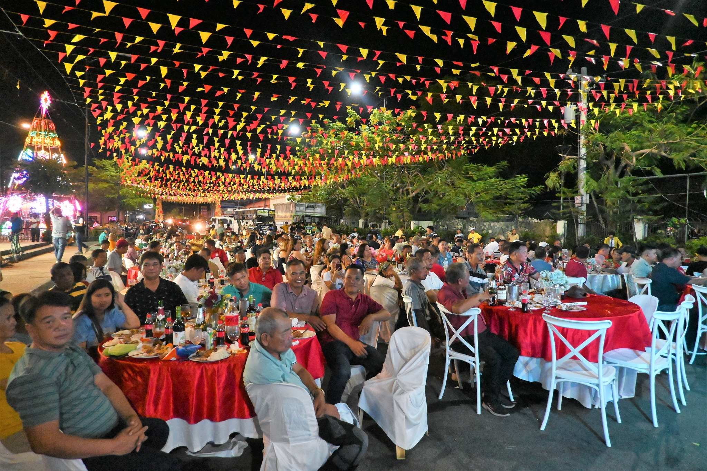

Latest Highlights

Barangay Health Summit
Urbiztondo held a health summit focusing on wellness and disease prevention with strong community participation.

Succesful Fiesta Celebration
Urbiztondo’s town fiesta was a vibrant success, featuring parades and cultural shows. Ongoing road and drainage projects also highlight the town’s commitment to progress.

Fun Run
The annual Fun Run brought the community together with lively music, scenic routes, and a shared spirit of health and celebration.